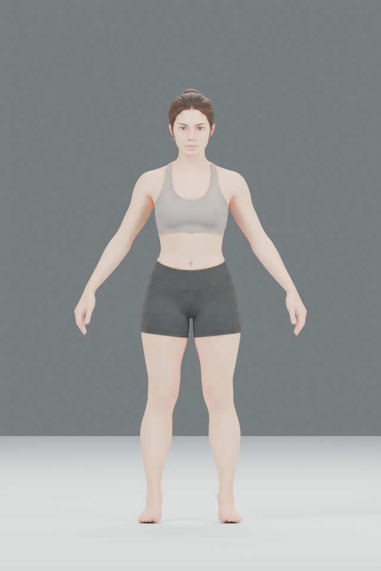
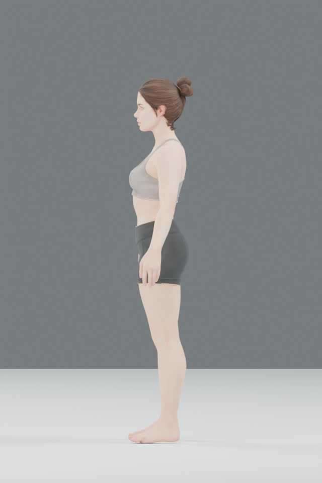
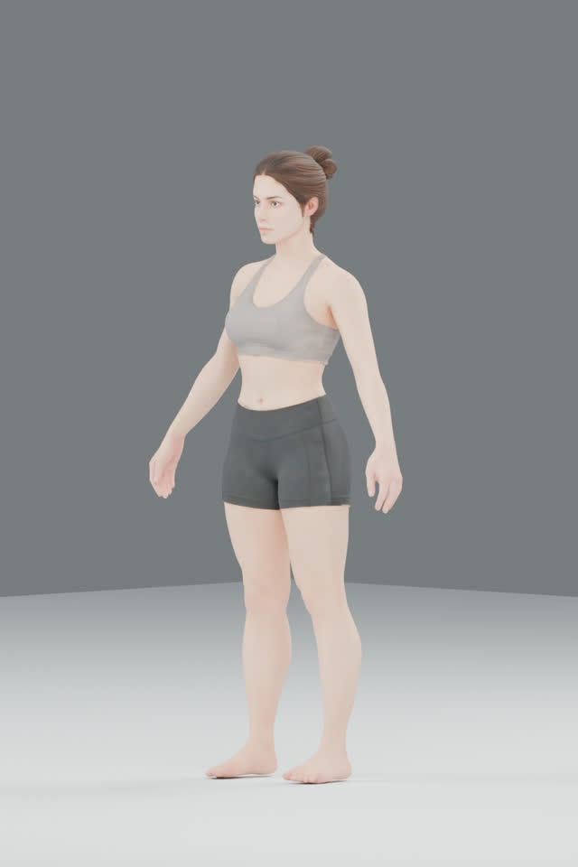
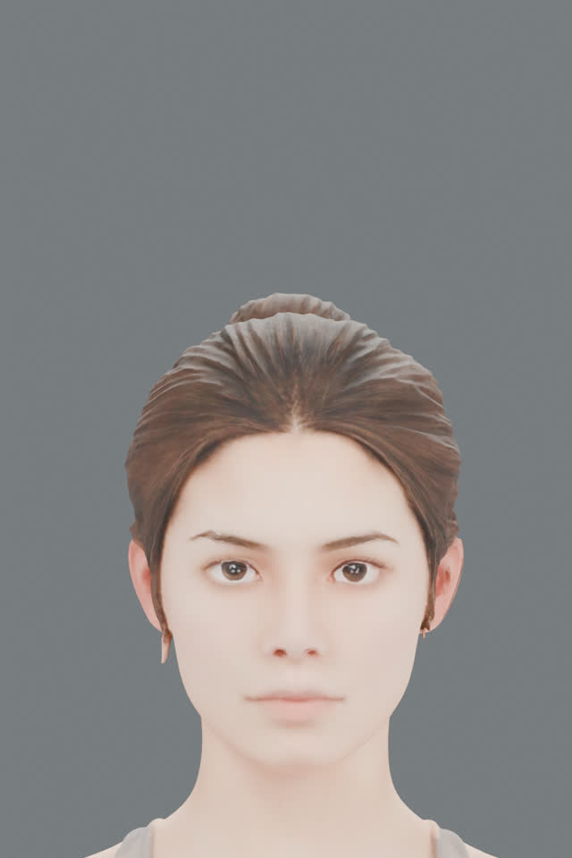
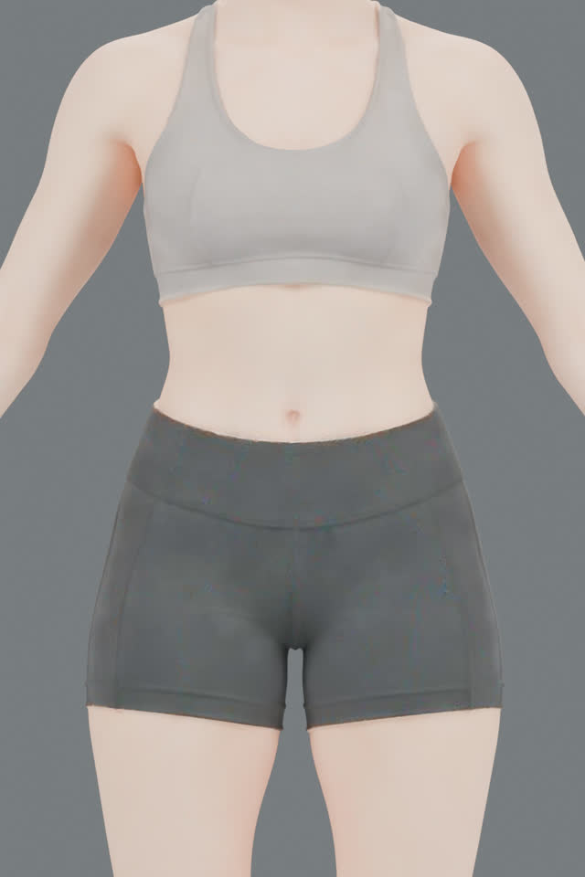
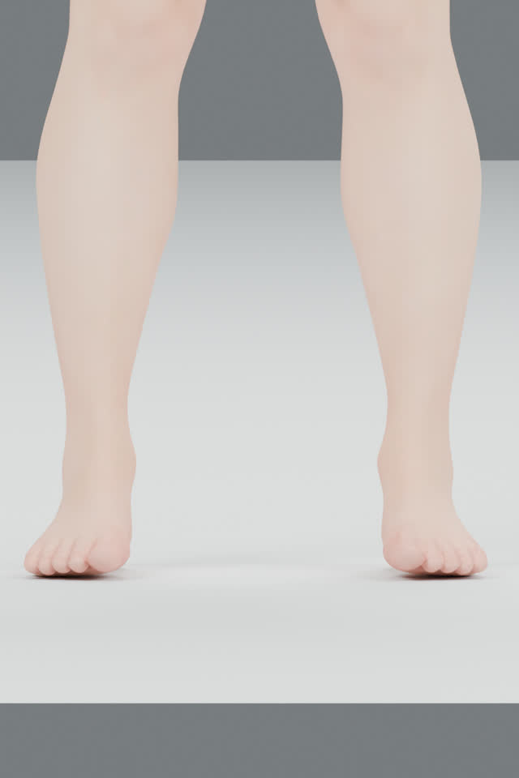
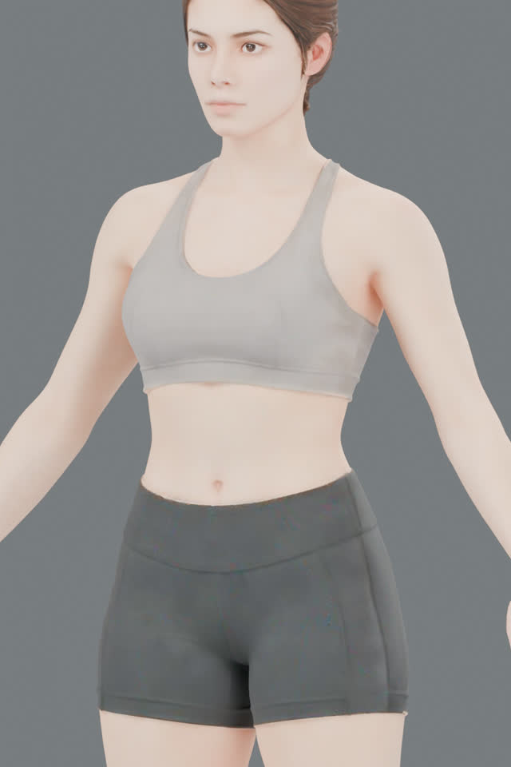

Цифровой тренер: первый 3D-тест
Пробная риггированная женская 3D-модель Grab3D. Все семь ракурсов получены из одной редактируемой сцены Blender. Это не принятый тренер и не анимация упражнения.
T0 · Технически отклонено, требуется другой мастер-ассет
Семь контрольных ракурсов







Почему этот источник не проходит мастер-ТЗ
24 костиНет отдельных костей пальцев — нельзя достоверно анимировать опоры на ладонях
1 материалТело, кожа и одежда объединены; нет раздельных компонентов для спортивного комплекта
Обуви нетМодель босиком, в топе и шортах вместо утверждённого спортивного комплекта
Фактические данные скачанного файла: 163 993 вершины, 24 кости и три текстуры 2048 × 2048. По лицензии CC0, происхождение AI-assisted Meshy. Визуальная оценка пользователя этому источнику пока не выставлена.